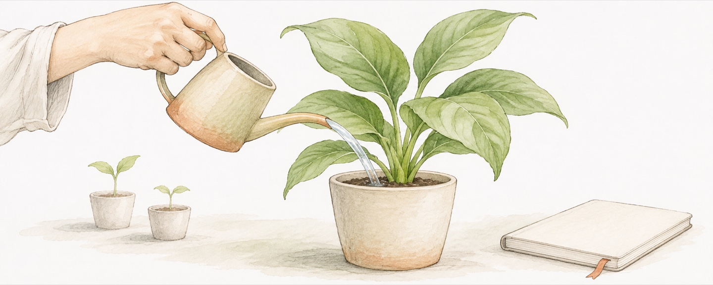

Choosing where my attention goes

I want a briefing I can listen to on my phone. If it keeps getting longer, though, I may save time searching while spending just as much attention listening. Finding more information and making time to think about it are different tasks.
I know that time and attention are valuable. I also notice that they do not always go to the questions I consider important. Developments in AI, biological research, and ideas worth reading may all be useful. I still have to decide what I want to understand today.
Make time for questions of my own
I want to use the time when I can concentrate for things I need to think through myself. What do I want? Why does my current direction deserve more work? How do changes in the world relate to my interests and strengths? Those questions require a pause. More information will not automatically put them in order.
Looking back at where my time went gives me something more specific than saying a topic matters. Did the question I claim to value receive any attention? Did new reading change a judgment, or mainly send me looking for the next item? These are questions I want to use to examine my own choices.
Spend less time searching, leave time to think
I want AI to help find leads, organize material, and compare accounts. To follow developments in AI itself, I am willing to seek out researchers and official sources to see what they did and how they describe the result. Claims that affect a decision deserve a look at their supporting evidence.
I also want time to think after the information has been organized. A summary can help me decide whether to read further. Some questions require only an overview; others call for the original material. The decision I am making should help determine how closely I read.
When an idea occurs, I record it on my phone. That lets me put the thought down and return to what I was doing. Recording something and choosing to keep thinking about it are separate decisions. After saving it, I still need to decide whether it deserves the next stretch of my attention.
Choosing my attention includes rest. I want to make deliberate choices about when to work and when to put the work down, with uninterrupted time for both.